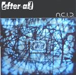

| Artist: | after@all |
| Title: | A.C.I.D. |
| Label: | Stereo Periferic BGCD 082 |
| Length(s): | 59 minutes |
| Year(s) of release: | 2001 |
| Month of review: | [03/2002] |
| 1) | Connecting | 1.14 |
| 2) | Net.com (upload) | 5.52 |
| 3) | Net.com (system Shutdown) | 2.38 |
| 4) | Chameleon | 7.02 |
| 5) | Freakazoid (m. To V.g.) | 5.16 |
| 6) | A(ll) C(an) I(nherit) D(ifferences) | 2.08 |
| 7) | Dust In... | 2.16 |
| 8) | ... Hoffman | 4.10 |
| 9) | L'image D'une Etoile | 4.11 |
| 10) | Reconnecting | 1.34 |
| 11) | Synthetic | 7.20 |
| 12) | Bloom | 5.26 |
| 13) | Ain't | 3.49 |
| 14) | Disconnecting | 2.34 |
| 15) | Kedves (bonus Track) | 3.47 |
Although the opening sounds familiar for different reasons, it is clear that the opening of Chameleon (the single) is very much in the 80ies King Crimson vein. Repetitive guitar and piano patterns and varied rhythms make for an up-beat track in which progmetal and the progrock of King Crimson are neatly combined. The vocal parts owe both to Dream Theater (but without the screaming) and the grunge bands. In fact, the middle part reminds of Dream Theater in a good way. Energetic stuff with quite a bit of swing.
Freakazoid (m. to v.g.) is a rather weird tune in which I hear references to Faith No More and King Crimson with a kind of jazzy feel as well. The vocals can be kind of rough on this one. In the middle part the guitars rock away in a riff dominated passage. Time for some bass then, and a bit of grooviness.
Next up is the title track (kind of). Again, the band does not avoid experimentation and are certainly not out to make a standardized kind of progmetal, but succeeds in integrating it with the sound of modern rock bands. Mostly spoken words and synth effects on this psychedelic sounding sinister track.
A sense of humour is also present as the title of the following two tracks exemplify. Dust In... is a groovy but short vocal tune. One might think of King's X here: heavy and groovy on the guitars, but accessible vocal parts. Okay, maybe I should also mention the screams in the middle. It does make the song more interesting. Moving right into ...Hoffman, the song does not change that much, except that the bass takes over the groove. The synths and rhythms are quite modern and at times a little estranging, but I like it. The band fiddles around, but does so in a, to me, meaningful way. This part turns out to be quite a heavy one.
L'Image D'Une Etoile is ballad time. Low bass, ethereal guitars, later turning acoustic dominate this moody track. The verses are not that appealing, but I do like the chorus, especially the intertwining with the French lines. At the end time for a little bit of moody sax as well.
After Reconnecting to the album, Synthetic is again one of those hard hitting rock tracks in which the band again uses hiccupping vocal effects. The style on this song is that of a varied kind of claustophobic rock with a catchy chorus. Bloom opens in Crimson style with repetitive Discipline inspired guitar lines, the vocals are rather hazy and at times have a sixties feel.
Ain't is a rather easy going track, a pop love song with synth strings. The vocal melody is good. Disconnecting is a desperate sounding track and the conclusion of the album sec. The bonus track is Kedves, it is the Hungarian version of Ain't.